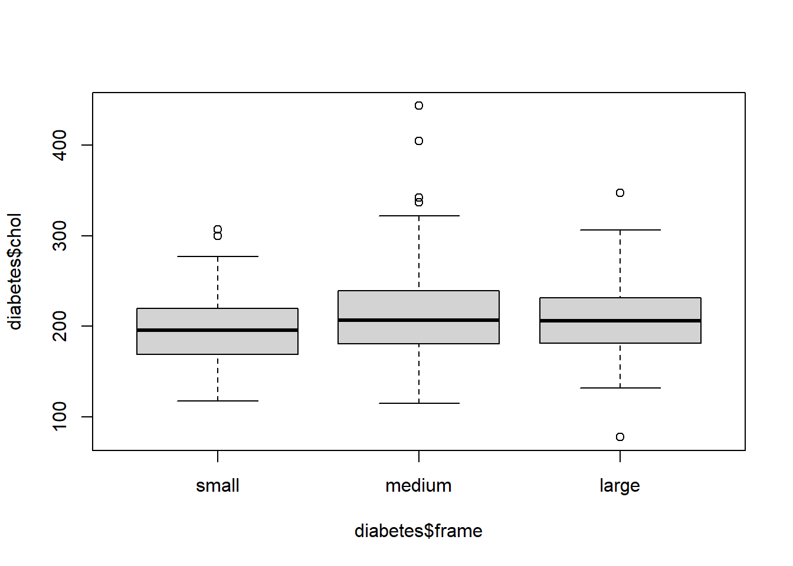

En esta práctica vamos a trabajar con el fichero de datos Diabetes.
El fichero de datos contiene 19 variables medidas sobre 403 pacientes. Estos pacientes forman parte de un estudio con 1046 sujetos diseñado para investigar la prevalencia de la de obesidad, diabetes, y otros factores de riesgo cardiovasculares para Afroamericanos en Virginia, EEUU.
Según Dr John Hong, Diabetes Mellitus Tipo II está asociada con la obesidad. El índice cintura-cadera puede ser un predictor en diabetes y enfermedades de corazón.
Diabetes Mellitus Tipo II está también asociada con hipertensión y ambos pueden ser parte del “Síndrome X”.
Los 403 sujetos del estudio son aquellos a los que se les hizo un seguimiento de diabetes. La hemoglobina glicosilada \(>7.0\) se toma normalmente como diagnóstico positivo de diabetes.
1.6 Realiza una representación gráfica adecuada para la variable frame. ¿Qué información obtienes?
n <-table(diabetes$frame)# Diagrama de barrasbarplot(n, col=c("red","blue","green"), main="Tamaño del cuerpo")
# Diagrama de sectorespie(n, col=c("red","blue","green"), main="Tamaño del cuerpo")
1.7 Calcula la moda de la variable frame. ¿Qué significa?
Moda: medium
Intepretación: La mayoría de los pacientes tienen tamaño del cuerpo mediano
1.8 ¿Qué representaciones gráficas te parecen adecuadas para la variable chol?
1.9 Realiza un histograma y un diagrama de cajas de la variable chol. ¿Qué información obtienes de ellos?
par(mfrow=c(1,2))hist(diabetes$chol, main="Histograma", xlab="Colesterol")boxplot(diabetes$chol, main="Diagrama de caja", xlab="Colesterol")
1.10 A la vista del diagrama de cajas y del histograma de la variable chol, qué puedes decir acerca de su simetría? ¿Qué crees que será mayor, la media o la mediana?
1.11 Calcula el coeficiente de asimetría, la media y la mediana de la variable chol.
library(PASWR2)
Cargando paquete requerido: lattice
Cargando paquete requerido: ggplot2
eda(diabetes$chol)
Size (n) Missing Minimum 1st Qu Mean Median TrMean 3rd Qu
403.000 0.000 78.000 179.000 207.846 204.000 205.903 230.000
Max Stdev Var SE Mean I.Q.R. Range Kurtosis Skewness
443.000 44.390 1970.494 2.211 51.000 365.000 2.558 0.924
SW p-val
0.000
Coeficiente de asimetria: 0.924
Intepretación: Como el coeficiente es positivo, la distribución de la variable colesterol muestra una asimetría hacia la derecha. Es decir, los niveles de colesterol por encima de la media (207.85 mg/dL) están más dispersos que los valores por debajo de ella.
Mediana: 204 mg/dl
Intepretación: La mitad de los pacientes tienen un colesterol (inferior a) menor o igual a 204 mg/dl
Percentil 75 (Cuartil 3): 230 mg/dl
Intepretación: El 75% de los paciente tiene un colesterol de 230 mg/dl o menos.
1.12 Calcula el mínimo, el máximo, los cuartiles y la desviación típica de la variable chol. ¿Entre qué valores se encuentra el 25% de las personas con el colesterol más alto? ¿Y el 75% de las personas con el colesterol más bajo? ¿Qué puedes decir acerca de la dispersión de la variable?¿ Dónde hay más dispersión, en el 25% de las personas con mayor colesterol o en el 25% de las personas con colesterol más bajo?
1.13 Calcula el coeficiente de curtosis de la variable chol. ¿Qué indica?
Curtosis: 2.558
Intepretación: Como la curtosis es positiva, la distribución de la variable colesterol muestra una mayor concentración en torno a la media (207.85 mg/dL) que una distribución normal.
1.14 Según el diagrama de cajas, ¿existe alguna observación atípica? ¿Alguna de ellas es un valor extremo?
b <-boxplot(diabetes$chol)
b$out
[1] 78 443 318 347 342 404 307 337 322
## Para calcular valores extremos, debemos tipificar la variable ##diabetes$Z.chol <- (diabetes$chol-mean(diabetes$chol))/sd(diabetes$chol)pos <-which(diabetes$Z.chol<-3| diabetes$Z.chol>3)diabetes[pos,]
id chol stab.glu hdl ratio glyhb location age gender height weight
63 2778 443 185 23 19.3 14.31 Buckingham 51 female 70 235
148 12769 347 197 42 8.3 6.34 Buckingham 36 male 70 277
213 15800 342 251 48 7.1 12.67 Buckingham 63 female 65 201
295 20313 404 206 33 12.2 10.75 Louisa 56 male 69 159
frame bp.1s bp.1d waist hip Z.chol
63 medium 158 98 43 48 5.297431
148 large 140 86 51 49 3.134793
213 medium 178 88 45 46 3.022156
295 medium 162 88 38 39 4.418859
Los valores de colesterol 443, 404, 347 y 342 mg/dL son valores extremos.
1.15 ¿Cuántos hombres y cuántas mujeres hay en la muestra?
table(diabetes$gender)
female male
234 169
1.16 ¿Cuántas personas residen en Buckingham? ¿Cuántas en Louisa?
table(diabetes$location)
Buckingham Louisa
200 203
1.17 ¿Puedes calcular la media y la mediana de la variable location?
1.18 Realiza un diagrama de cajas de la variable chol según las categorías de la variable frame.
boxplot(diabetes$chol ~ diabetes$frame)

# También se puede escribir como:boxplot(chol ~ frame, data=diabetes)
1.19 Realiza un diagrama de cajas de la variable chol según las categorías de la frame y la variable gender.
boxplot(chol ~ frame + gender, data=diabetes)
1.20 Calcula la media, mediana, la desviación típica y los cuartiles de la variable chol según las categorías de la variable frame?
tapply(diabetes$chol, diabetes$frame, summary)
$small
Min. 1st Qu. Median Mean 3rd Qu. Max.
118.0 169.5 196.0 197.6 219.2 307.0
$medium
Min. 1st Qu. Median Mean 3rd Qu. Max.
115.0 181.0 206.5 213.2 239.2 443.0
$large
Min. 1st Qu. Median Mean 3rd Qu. Max.
78.0 181.5 206.0 208.0 231.5 347.0
tapply(diabetes$chol, diabetes$frame, sd)
small medium large
38.95477 46.87484 43.25211
1.21 Realiza un histograma de la variable chol según las categorías de la variable frame y la variable gender.
histogram( ~ chol | frame*gender, data=diabetes)
1.22 Calcula la media, la mediana, los cuartiles y la desviación típica de la variable glyhb. Explica cómo está de dispersa utilizando el histograma, el diagrama de cajas, los cuartiles y la desviación típica.
eda(diabetes$glyhb)
Size (n) Missing Minimum 1st Qu Mean Median TrMean 3rd Qu
403.000 0.000 2.680 4.390 5.590 4.870 5.313 5.590
Max Stdev Var SE Mean I.Q.R. Range Kurtosis Skewness
16.110 2.206 4.867 0.110 1.200 13.430 5.252 2.266
SW p-val
0.000
1.23 Compara la dispersión de las variables chol y glyhb. ¿Qué variable tiene la desviación típica más alta? ¿Puedes concluir que aquella variable con la desviación típica más alta es la más dispersa? ¿Por qué? ¿Qué medida crees que es la más adecuada?
eda(diabetes$chol)
Size (n) Missing Minimum 1st Qu Mean Median TrMean 3rd Qu
403.000 0.000 78.000 179.000 207.846 204.000 205.903 230.000
Max Stdev Var SE Mean I.Q.R. Range Kurtosis Skewness
443.000 44.390 1970.494 2.211 51.000 365.000 2.558 0.924
SW p-val
0.000
eda(diabetes$glyhb)
Size (n) Missing Minimum 1st Qu Mean Median TrMean 3rd Qu
403.000 0.000 2.680 4.390 5.590 4.870 5.313 5.590
Max Stdev Var SE Mean I.Q.R. Range Kurtosis Skewness
16.110 2.206 4.867 0.110 1.200 13.430 5.252 2.266
SW p-val
0.000
1.24 Considera la variable chol por sexo. Selecciona el hombre y la mujer con mayor nivel de colesterol. ¿Cuál de los dos destaca más en comparación a la media de su grupo?
1.27 Calcula el mínimo, el máximo, los cuartiles y la desviación típica de la variable ratioWH. ¿Entre qué valores se encuentra el 25% de los valores más altos? ¿Y el 75% de los valores más bajos?
eda(diabetes$ratioWH)
Size (n) Missing Minimum 1st Qu Mean Median TrMean 3rd Qu
403.000 0.000 0.682 0.830 0.881 0.881 0.879 0.925
Max Stdev Var SE Mean I.Q.R. Range Kurtosis Skewness
1.143 0.072 0.005 0.004 0.095 0.461 0.644 0.383
SW p-val
0.002
summary(diabetes$ratioWH)
Min. 1st Qu. Median Mean 3rd Qu. Max.
0.6818 0.8298 0.8806 0.8809 0.9250 1.1429
2. Tablas de doble entrada
2.1 ¿Cuántos hombres y cuántas mujeres hay en la localización Buckingham? ¿Cuántos en Louisa?
table(diabetes$gender,diabetes$location)
Buckingham Louisa
female 114 120
male 86 83
2.2 ¿Qué porcentaje de personas en la muestra tienen un body frame small y además son de Buckingham?
X <-table(diabetes$frame,diabetes$location)prop.table(X)
Buckingham Louisa
small 0.11910670 0.13895782
medium 0.22084367 0.26550868
large 0.15632754 0.09925558
2.3 Dibuja un diagrama de barras donde representes las frecuencias de la variable location para cada una de las categorías de la variable frame?
X <-table(diabetes$location,diabetes$frame)X
small medium large
Buckingham 48 89 63
Louisa 56 107 40
barplot(X, main="Location stacked within levels of frame", legend.text=TRUE)
barplot(t(X), main="Frame stacked within levels of location", legend.text=TRUE)
2.4 Forma una tabla de doble entrada cruzando las variables gender y frame. ¿Cuántas mujeres tienen un body frame medium?
Y <-table(diabetes$gender,diabetes$frame)Y
small medium large
female 69 123 42
male 35 73 61
2.5 Qué porcentaje de hombres tienen un body frame large?
prop.table(Y)
small medium large
female 0.17121588 0.30521092 0.10421836
male 0.08684864 0.18114144 0.15136476
prop.table(Y,1)
small medium large
female 0.2948718 0.5256410 0.1794872
male 0.2071006 0.4319527 0.3609467
EJERCICIOS: Para resolver en clase
Cruza las variables gender y frame y responde a las siguientes preguntas
¿Cuántas mujeres tienen body frame large?
¿Qué porcentaje de mujeres tienen body frame large?
¿Cuál es el porcentaje de hombres con body frame small?
¿Qué porcentaje de pacientes con body frame medium son hombres?
3. Covarianza y correlación
3.1 Realiza un diagrama de dispersión de las variables weight y waist. ¿Crees que existe relación lineal entre ambas variables? Calcula la covarianza y el coeficiente de correlación lineal.
plot(diabetes$weight,diabetes$waist)
cov(diabetes$weight,diabetes$waist)
[1] 194.8847
cor(diabetes$weight,diabetes$waist)
[1] 0.8463617
Covarianza: 194.88 (pounds*inches)
Correlación: 0.846 (sin unidades)
Interpretación: Dado que la covarianza es positiva, existe una relación lineal directa entre el peso y la anchura de la cintura de los pacientes. Es decir, a medida que aumenta el peso se espera que también lo haga la anchura d ela cintura. Además como la correlación está cerca del valor “1”, podemos afirmar que dicha relación lineal es fuerte.
3.2 Realiza un diagrama de dispersión de las variables chol y weight. ¿Crees que existe relación lineal entre ambas variables? Calcula la covarianza y el coeficiente de correlación lineal.
plot(diabetes$weight, diabetes$chol)
cov(diabetes$chol,diabetes$weight)
[1] 118.4692
cor(diabetes$chol,diabetes$weight)
[1] 0.06623929
3.3 Selecciona las personas del condado de Buckingham y realiza un diagrama de dispersión de las variables waist y hip. ¿Crees que existe relación lineal entre ambas variables? Calcula la covarianza y el coeficiente de correlación lineal.
3.4 Selecciona las mujeres con body frame medium y realiza un diagrama de dispersión de las variables bp.1s y age. ¿Crees que existe relación lineal entre ambas variables? Calcula la covarianza y el coeficiente de correlación lineal.
Una Organización de Salud busca identificar qué factores de los pacientes están más asociados con la remisión del cáncer de pulmón tras el tratamiento, en el marco de un estudio más amplio sobre los resultados del tratamiento y la calidad de vida de los pacientes con esta enfermedad.
El archivo patients.txt contiene las siguientes variables medidas sobre un conjunto de datos de 8.525 pacientes.
remission: response variable (0=no, 1=yes)
Age: age of the patient (in years)
IL6: Interleukin-6 concentration in blood (pg/ml)
CRP: C-reactive protein concentration in blood (mg/dl)
LengthofStay: duration of a patient’s hospital stay (in weeks)
CancerStage: lung cancer stage (I, II, III or IV)
Smoking: is the patient a smoker? (1=never, 2=former, 3=current)
remission Age IL6 CRP LengthofStay CancerStage Smoking ID.hospital
1 0 65 3.699 8.086 6 II former 1
2 0 54 2.627 0.803 6 II former 1
3 0 53 13.896 4.034 5 II never 1
4 0 41 3.008 2.126 5 I former 1
5 0 47 3.891 1.349 6 II never 1
6 0 52 1.418 2.195 5 I never 1
En primer lugar, selecciona los pacientes asociados a tu código de hospital (ID.hospital) e indica cuántos pacientes pertenecen a dicho hospital.
1) Realiza un histograma y un diagrama de cajas de la variable IL6. ¿Qué puedes decir acerca de la simetría y la dispersión de la variable?
2) Calcula la media, mediana, cuartiles, desviación típica, coeficientes de asimetría y de curtosis, y los coeficientes de variación. Indica sus unidades e interpreta los estadísticos (en aquellos casos que sea posible).
3) Dibuja un histograma y un diagrama de cajas en función de la variable CancerStage. Interpreta los gráficos obtenidos.
4) Realiza un diagrama de dispersión de las variables IL6 y CRP. ¿Crees que existe relación lineal entre ellas? Calcula e interpreta la covarianza y el coeficiente de correlación lineal (indica sus unidades).
5) Selecciona el paciente fumador (never) y ex-fumador (former) con valores más bajos en la variable CRP. ¿Cuál de los dos pacientes destaca más en comparación a la media de su grupo? Justifica la respuesta.